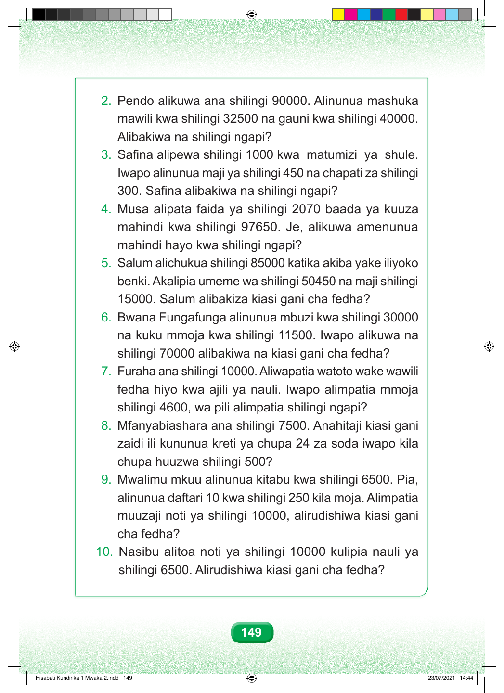

2. Pendo alikuwa ana shilingi 90000. Alinunua mashuka mawili kwa shilingi 32500 na gauni kwa shilingi 40000. Alibakiwa na shilingi ngapi? 3. Safina alipewa shilingi 1000 kwa matumizi ya shule. Iwapo alinunua maji ya shilingi 450 na chapati za shilingi 300. Safina alibakiwa na shilingi ngapi? 4. Musa alipata faida ya shilingi 2070 baada ya kuuza mahindi kwa shilingi 97650. Je, alikuwa amenunua mahindi hayo kwa shilingi ngapi? 5. Salum alichukua shilingi 85000 katika akiba yake iliyoko benki. Akalipia umeme wa shilingi 50450 na maji shilingi 15000. Salum alibakiza kiasi gani cha fedha? 6. Bwana Fungafunga alinunua mbuzi kwa shilingi 30000 na kuku mmoja kwa shilingi 11500. Iwapo alikuwa na shilingi 70000 alibakiwa na kiasi gani cha fedha? 7. Furaha ana shilingi 10000. Aliwapatia watoto wake wawili fedha hiyo kwa ajili ya nauli. Iwapo alimpatia mmoja shilingi 4600, wa pili alimpatia shilingi ngapi? 8. Mfanyabiashara ana shilingi 7500. Anahitaji kiasi gani zaidi ili kununua kreti ya chupa 24 za soda iwapo kila chupa huuzwa shilingi 500? 9. Mwalimu mkuu alinunua kitabu kwa shilingi 6500. Pia, alinunua daftari 10 kwa shilingi 250 kila moja. Alimpatia muuzaji noti ya shilingi 10000, alirudishiwa kiasi gani cha fedha? 10. Nasibu alitoa noti ya shilingi 10000 kulipia nauli ya shilingi 6500. Alirudishiwa kiasi gani cha fedha? 149 Hisabati Kundirika 1 Mwaka 2.indd 149 23/07/2021 14:44